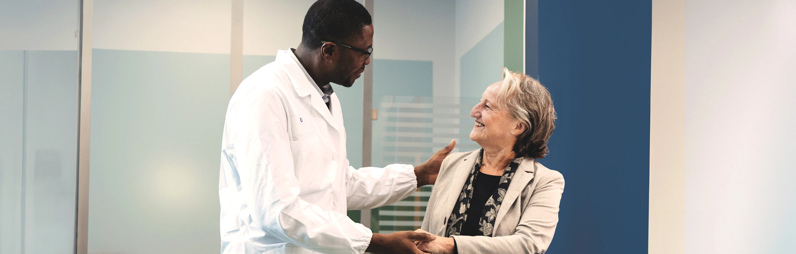
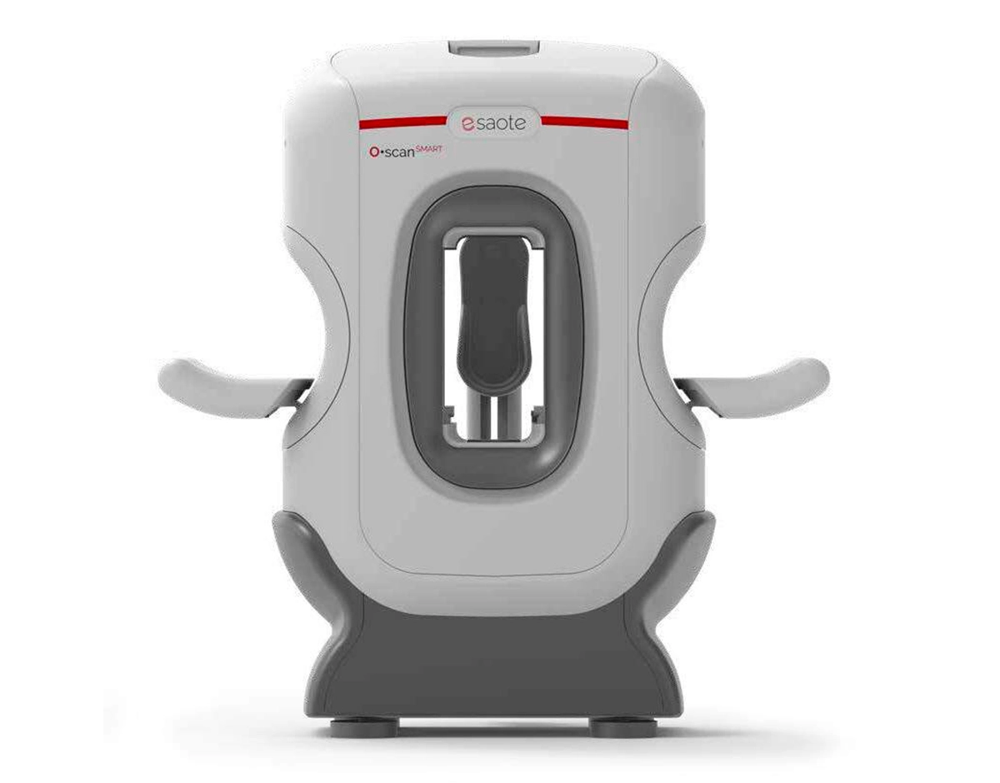
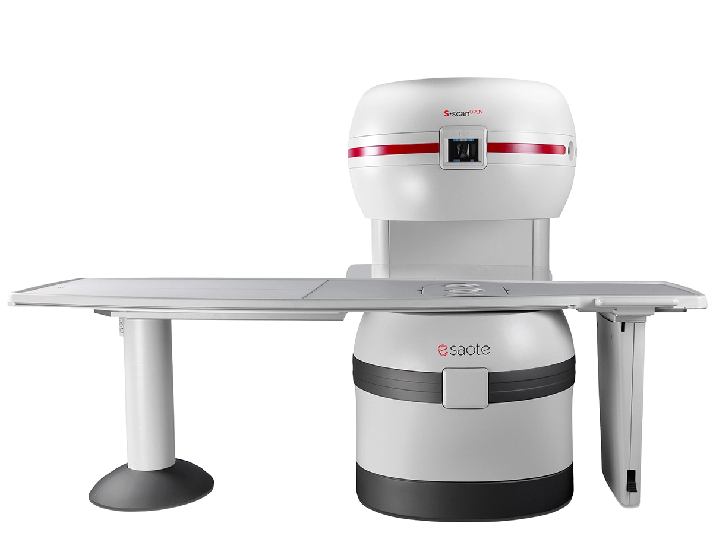
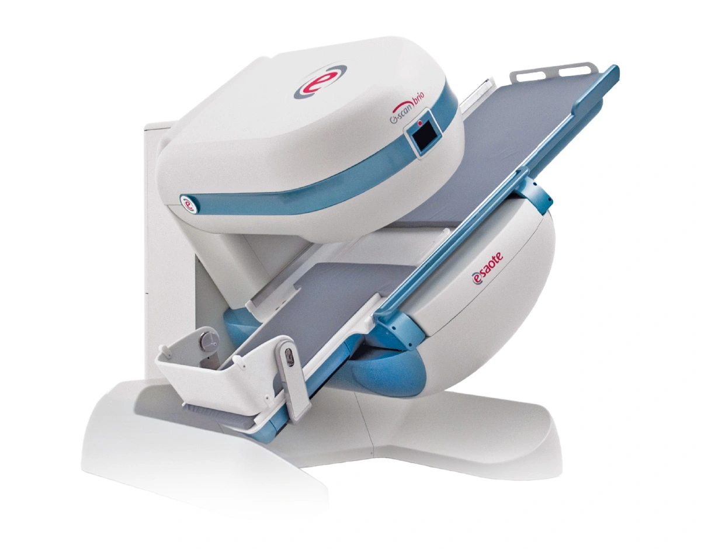

Implants et prothèses
Le champ moyen aide à réduire les artéfacts de susceptibilité autour du matériel métallique, pour mieux valoriser l'imagerie post-opératoire et péri-prothétique.
Voir des examens métal
Du membre isolé au bloc opératoire neuro, Esaote couvre les examens d'extrémités, le musculo-squelettique et le rachis, l'imagerie en charge, le corps entier ouvert et l'IRM intra-opératoire. Des solutions ouvertes, spécialisées et sans hélium, complémentaires d'une IRM généraliste 1,5 T / 3 T.
Cliquez sur une IRM pour découvrir sa présentation détaillée.
Les solutions Esaote apportent une réponse spécialisée en MSK, post-opératoire, imagerie dynamique, guidage interventionnel et neurochirurgie intra-opératoire.
Le champ moyen aide à réduire les artéfacts de susceptibilité autour du matériel métallique, pour mieux valoriser l'imagerie post-opératoire et péri-prothétique.
Voir des examens métalTrue Motion permet de documenter le mouvement articulaire et d'apporter une lecture plus fonctionnelle en médecine du sport, suivi post-opératoire et retour terrain.
Le G-scan compare décubitus et position debout pour objectiver des symptômes qui apparaissent sous contrainte fonctionnelle.
Voir examen en chargeLa conception ouverte facilite l'accès patient, le positionnement, le contrôle image et certains gestes guidés sous IRM.
I-Genius apporte l'IRM directement au bloc neurochirurgical pour réaliser des contrôles per-opératoires, sans transfert du patient, et aider l'équipe à réévaluer la résection.
Une autre façon de faire de l'IRM : accessible, simple, humaine et complémentaire.
Investissement et coûts d'exploitation maîtrisés : consommation électrique très faible, sans hélium, peu d'entretien, installation simple. Un modèle rentable dès 6 examens par jour.
Des aimants ouverts, anti-claustrophobie et silencieux, avec SAR réduit, accès facile et tables pivotantes. L'examen IRM enfin serein — y compris pour les patients anxieux, âgés ou corpulents (jusqu'à 200 kg).
Ce que les IRM généralistes ne font pas : imagerie en charge (debout), focalisation MSK, imagerie dynamique, post-chirurgicale et péri-prothétique avec réduction des artéfacts métalliques. Le complément idéal d'une IRM 1,5 T / 3 T.
« Easy to use » : interface intuitive, workflow guidé et écran intégré au statif pour aider au bon positionnement du patient, avec indication de sécurité lorsqu'un élément métallique est détecté. Un MERM n'ayant jamais travaillé sur une IRM corps entier peut devenir opérationnel après une journée de formation.
La durabilité est dans l'ADN d'Esaote : moins d'énergie, moins de ressources, plus d'accessibilité.
Green MRI par technologie d'aimant permanent Esaote (« Permanent magnet technology ») : ni hélium, ni cryogénie, ni ré-approvisionnement.
Quelques kW seulement pour l'IRM, avec une charge thermique limitée et donc moins d'électricité pour la pompe à chaleur ou la climatisation de salle.
Faible encombrement, sans ligne électrique dédiée, mise en service rapide.
ISO 9001 · 13485 · 14001. Qualité, dispositif médical et environnement.
Écrivez à Cédric Goillot — réponse rapide, sans engagement.
Nous contacter
Open-Fauteuil · 0,31 TIRM Open Fauteuil.
Seuls les membres du patient entrent dans l'aimant : zéro claustrophobie, une installation ultra-compacte et un coût d'exploitation minime. La solution idéale comme 2e IRM : elle s'installe aussi bien en radiologie centrale que dans le service d'imagerie en coupe — 2 à 3 patients par heure en diagnostic, et 3 à 5 patients par heure pour des contrôles post-opératoires ciblés.

MSK & rachis · 0,25 TL'IRM ouverte pensée pour le musculo-squelettique.
Conçue pour le MSK et le rachis — plus de 50 % de la charge de travail IRM — avec une conception totalement ouverte : la tête du patient reste hors de l'aimant, la table pivote pour un accès facile, jusqu'à 200 kg. Option d'examen cérébral.

En charge · 0,25 TLa seule IRM qui examine le patient debout, en charge.
Le différenciateur unique d'Esaote : une table basculante qui réalise l'examen en position de charge (debout). Elle révèle ce qu'une IRM classique en décubitus ne montre pas — instabilités rachidiennes, pathologies dégénératives, comportement méniscal et rotulien. Colonne, genou, hanche, cheville.
Le champ moyen ouvert, pour tout le corps.
L'IRM ouverte corps entier champ moyen d'Esaote : la polyvalence d'un examen complet avec le confort de l'ouvert et des coûts d'électricité et d'eau glacée très réduits face à une 1,5 T. Un complément accessible et durable à une IRM généraliste.
L'IRM intra-opératoire dédiée à la neurochirurgie.
I-Genius apporte l'imagerie IRM directement au bloc opératoire neurochirurgical. La solution permet de réaliser des contrôles pendant la chirurgie, sans transfert du patient, pour aider l'équipe à réévaluer la résection et à poursuivre l'intervention avec davantage d'informations.